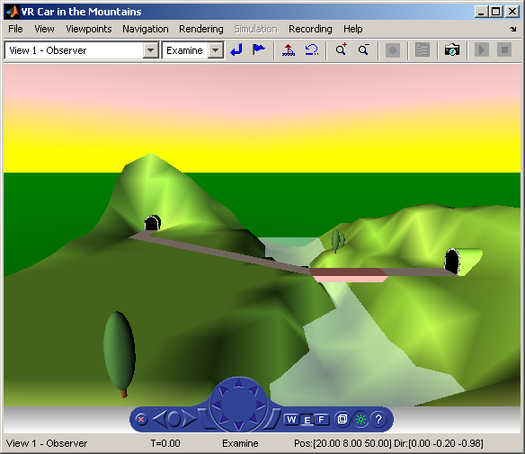

Car in the Mountains
This demonstration illustrates the use of the Simulink® 3D Animation™ MATLAB® interface. In a step-by-step tutorial, it shows commands for querying and manipulating virtual world objects. You will learn about virtual world structures and then navigate a virtual car along a path through the mountains.
Contents
In this example we will show you how to control an object in a virtual world using the MATLAB object-oriented interface.
Create a World Object
We begin by creating an object of class VRWORLD that represents the virtual world. The VRML file constituting the world was previously made using the V-Realm VRML builder contained in the Simulink 3D Animation product. The name of the file is VRMOUNT.WRL.
world = vrworld('vrmount.wrl');
Open and View the World
The world must be opened before it can be used. This is accomplished using the OPEN command.
open(world);
The virtual world can be viewed in the VRML viewer. Simulink 3D Animation offers two ways of viewing virtual worlds - internal viewer (the default method) and external viewer (integrated with your Web browser). We will view the virtual world in the internal viewer using the VIEW function. It may take some time before the viewer opens, so please be patient.
fig = view(world, '-internal');
vrdrawnow;
 Examine the Virtual World Properties
You can examine the properties of the virtual world using the GET command. Note that the 'FileName' and 'Description' properties contain the file name and description taken from the 'title' property of the VRML file. Detailed descriptions of all the properties is beyond the scope of this example, but can be easily found in the Simulink 3D Animation manual or in the online documentation.
get(world)
Canvases = vr.canvas object: 0-by-0 Clients = 1 ClientUpdates = 'on' Comment = '' Description = 'VR Car in the Mountains' Figures = vrfigure object: 1-by-1 FileName = 'B:/matlab/toolbox/sl3d/sl3ddemos/vrmount.wrl' Nodes = vrnode object: 13-by-1 Open = 'on' Record3D = 'off' Record3DFileName = '%f_anim_%n.wrl' Recording = 'off' RecordMode = 'manual' RecordInterval = [0 0] RemoteView = 'off' Time = 0 TimeSource = 'external' View = 'on'
Finding Nodes of the World
All elements in a virtual world are represented by VRML nodes. The behavior of any element can be controlled by changing the fields of the appropriate node(s). The NODES command prints out a list of nodes available in the world.
nodes(world)
View1 (Viewpoint) [VR Car in the Mountains] Camera_car (Transform) [VR Car in the Mountains] VPfollow (Viewpoint) [VR Car in the Mountains] Automobile (Transform) [VR Car in the Mountains] Wheel (Shape) [VR Car in the Mountains] Tree1 (Group) [VR Car in the Mountains] Wood (Group) [VR Car in the Mountains] Canal (Shape) [VR Car in the Mountains] ElevApp (Appearance) [VR Car in the Mountains] River (Shape) [VR Car in the Mountains] Bridge (Shape) [VR Car in the Mountains] Road (Shape) [VR Car in the Mountains] Tunnel (Transform) [VR Car in the Mountains]
Accessing VRML Nodes
To access a VRML node, an appropriate VRNODE object must be created. The node is identified by its name and the world it belongs to.
We will create a VRNODE object associated with a VRML node 'Automobile' that represents a model of a car on the road. If you don't see it in the scene, don't worry. It is hidden in the tunnel on the left.
car = vrnode(world, 'Automobile')
car = vrnode object: 1-by-1 Automobile (Transform) [VR Car in the Mountains]
Viewing Fields of Nodes
VRML fields of a given node can be queried using the FIELDS command. You will see that there are fields named 'translation' and 'rotation' in the node list. You can move the car around by changing the values of these fields.
fields(car)
Field Access Type Sync ----------------------------------------------------------- addChildren eventIn MFNode off removeChildren eventIn MFNode off children exposedField MFNode off center exposedField SFVec3f off rotation exposedField SFRotation off scale exposedField SFVec3f off scaleOrientation exposedField SFRotation off translation exposedField SFVec3f off bboxCenter field SFVec3f off bboxSize field SFVec3f off
Moving the Car Node
Now we prepare vectors of coordinates that determine the car's movement. By setting them in a loop we will create an animated scene. There are three sets of data for the three phases of car movement.
z1 = 0:12; x1 = 3 + zeros(size(z1)); y1 = 0.25 + zeros(size(z1)); z2 = 12:26; x2 = 3:1.4285:23; y2 = 0.25 + zeros(size(z2)); x3 = 23:43; z3 = 26 + zeros(size(x3)); y3 = 0.25 + zeros(size(z3));
Now let's move the car along the first part of its trajectory. The car is moved by setting the 'translation' field of the 'Automobile' node.
for i=1:length(x1) car.translation = [x1(i) y1(i) z1(i)]; vrdrawnow; pause(0.1); end
We'll rotate the car a little to get to the second part of the road. This is done by setting the 'rotation' property of the 'Automobile' node.
car.rotation = [0, 1, 0, -0.7]; vrdrawnow;
Now we'll pass the second road section.
for i=1:length(x2) car.translation = [x2(i) y2(i) z2(i)]; vrdrawnow; pause(0.1); end
Finally, we turn the car to the left again ...
car.rotation = [0, 1, 0, 0]; vrdrawnow;
... and let it move through the third part of the road.
for i=1:length(x3) car.translation = [x3(i) y3(i) z3(i)]; vrdrawnow; pause(0.1); end
If you want to reset the scene to its original state defined in the VRML file, just reload the world.
reload(world); vrdrawnow;
Preserve the Virtual World Object in the MATLAB® Workspace
After you are done with a VRWORLD object, it is necessary to close and delete it. This is accomplished using the CLOSE and DELETE commands.
close(world); delete(world);
However, we will not do it here. Instead, let's leave the world open so that you can play with it further. You can try moving the car around using commands similar to those above, or you can try to access other nodes and their fields. We will clear only the used global variables.
clear ans car i x1 x2 x3 y1 y2 y3 z1 z2 z3